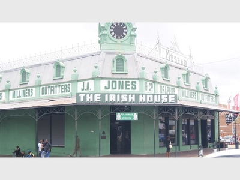

I would really like to vist this city mainly because of the technology advances I also knew I wanted to go after watching Tokyo drift
Kopano Joseph Mabusela

Which City

Foreign language to learn
I want to learn French mainly because of how it sounds when I hear french people speak it Also I think it is a romantic language
| English | French |
|---|---|
| Hello | Bonjour |
| Goodbye | Au revior |
| I love you | Je t'aime |
| I am hungry | J'ai faim |
| I want money | Je veux de l'argent |
Historical Places
Nelson Mandela Circle

- Named after Nelson Mandela
- Visible from the N1
- Connects to Nelson Mandela Street
The Irish Mesuem

- Was built in 1800
- The Only historic Mesuem in Polokwane
- Was rebuilt again in 1900 due to being burnt down
The Catholic Cathedral Church
- The oldest Church in Polokwane
- I go to this very same Church
- Construction took place in 1890